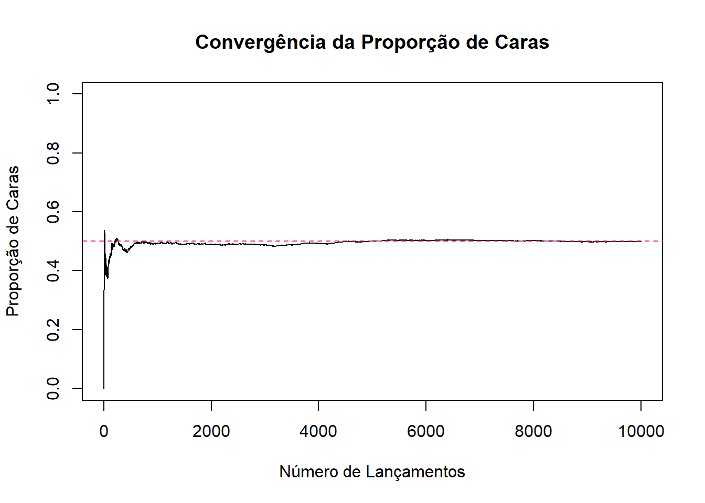
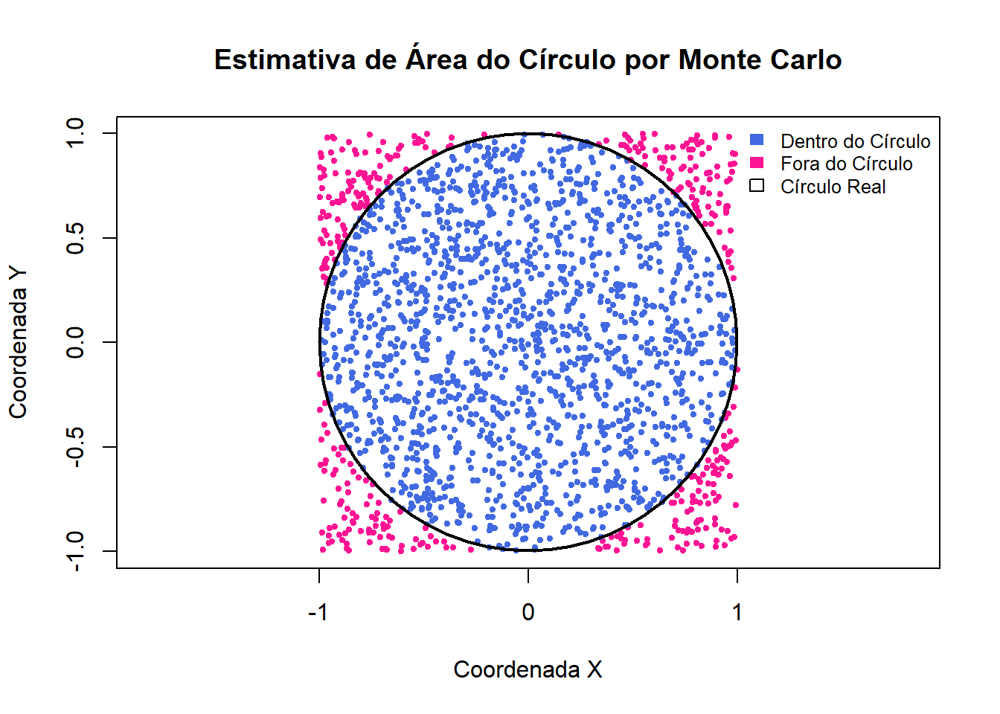

9 Simulação
A simulação computacional é uma ferramenta que permite o estudo de fenômenos complexos, que seriam difíceis ou inviáveis de analisar em contextos reais. Por meio dela, criamos modelos matemáticos que imitam o comportamento de sistemas verdadeiros.
Ou seja, em vez de observar o mundo real diretamente (o que pode ser caro, demorado ou impossível), geramos artificialmente observações que seguem uma determinada distribuição de probabilidade e que se comportam de forma semelhante aos dados reais. Dessa forma, podemos estudar suas propriedades, prever resultados ou testar hipóteses.
9.1 Lei dos Grandes Números
A Lei dos Grandes Números é a base teórica para a simulação ser algo tão confiável. Em termos simples, ela afirma que, à medida que o número de repetições de um experimento aleatório aumenta, a média dos resultados observados tende a se aproximar cada vez mais do valor esperado (média teórica) desse experimento. Ou seja, essa convergência garante que, com um número suficientemente grande de simulações, podemos calcular estimativas precisas para probabilidades e valores médios.
Por exemplo, a Lei dos Grandes Números nos diz que ao lançarmos um dado muitas vezes e calcularmos a média dos resultados, essa média se aproximará de 3,5 (o valor esperado de um dado uniforme discreta de 1 a 6).
De forma semelhante, podemos usar a simulação para observar o que acontece com uma moeda honesta. Se lançarmos 10 vezes, pode dar 7 caras e 3 coroas, mas ao repetir o experimento 10 mil vezes, a proporção de caras de aproxima de 0,5.
set.seed(123)
# Número de lançamentos
n_lancamentos <- 10000
# Simular lançamentos de moeda (0 = coroa, 1 = cara)
resultados <- sample(c(0, 1), size = n_lancamentos, replace = TRUE)
# Calcular a proporção de caras
proporcao_caras <- sum(resultados) / n_lancamentos
cat("Número de lançamentos:", n_lancamentos, "\n")## Número de lançamentos: 10000## Proporção de caras simulada: 0.4983# Para ver a convergência ao longo do tempo (Lei dos Grandes Números)
proporcoes_acumuladas <- cumsum(resultados) / (1:n_lancamentos)
plot(proporcoes_acumuladas, type = "l",
main = "Convergência da Proporção de Caras",
xlab = "Número de Lançamentos",
ylab = "Proporção de Caras",
ylim = c(0, 1))
abline(h = 0.5, col = "deeppink", lty = 2)
No código acima, primeiro definimos a semente do gerador de números aleatórios set.seed(123), para garantir que os resultados da simulação sejam possíveis de reproduzir, ou seja, toda vez que o código for executado com essa seed, os mesmos números aleatórios serão gerados.
Depois, simulamos os lançamentos da moeda, com 10 mil lançamentos. A função sample() escolhe aleatoriamente entre os valores 0 (coroa) e 1 (cara), com reposição (replace = TRUE). Sendo assim, cada lançamento é independente dos anteriores. O resultados é um vetor com 10 mil resultados de zeros e uns.
Com esses dados, criamos um gráfico da proporção acumulada de caras ao longo dos lançamentos. E por fim, adicionamos uma linha horizontal pontilhada no valor de 0,5 (o valor esperado de caras de uma moeda justa). Dessa forma, conseguimos visualizar como a média de caras observadas se aproximam do valor esperado (0,5).
Observe que no início, com poucos lançamentos, a proporção de caras varia bastante, mas conforme o número de lançamentos aumenta, a linha da proporção acumulada se aproxima cada vez mais de 0,5, confirmando o que a Lei dos Grandes Números nos diz.
9.2 Método de Monte Carlo
O Método de Monte Carlo é uma técnica de simulação, baseada na amostragem aleatória para obter resultados numéricos. Esse método funciona gerando um grande número de amostras aleatórias de uma distribuição de probabilidade e, com isso, estimando uma quantidade de interesse.
Como exemplo, imagine que queremos estimar a área de uma forma irregular. Podemos fazer isso gerando pontos aleatórios dentro de um quadrado que a contém e contar a proporção de pontos que caem dentro da forma irregular.
Utilizando essa ideia, aplicaremos o método de Monte Carlo para estimar a área de um círculo, a ideia é “jogar” pontos aleatoriamente dentro de um quadrado conhecido e ver quantos desses pontos caem dentro do círculo inscrito nesse quadrado.
Pense em um círculo centrado na origem (ponto (0, 0)) e de raio 1. Ou seja, ele ocupa a região: \(x^2 + y^2 \leq 1\). Esse círculo está inteiramente contido dentro de um quadrado que vai de [-1, 1] tanto no eixo \(x\), quanto no eixo \(y\), isto é, o quadrado tem lado 2.
Sabemos que a área real de um círculo é:
\[ \text{Área real} = \pi \cdot r^2 = \pi \cdot 1^2 = \pi \approx 3,1416 \]
Estimando isso pelo metódo de Monte Carlo, vamos gerar aleatoriamente pontos dentro do quadrado e contar quantos desses pontos caem dentro do círculo (satisfazem \(x^2 + y^2 \leq 1\)). A fração de pontos dentro do círculo multiplicada pela área do quadrado (que é 4) nos dá uma estimativa para \(\pi\).
# Define a semente para garantir reprodutibilidade dos resultados
set.seed(123)
# Definir o número de pontos
n_pontos <- 10000
# Gerar coordenadas X e Y aleatórias para os pontos dentro do quadrado [-1, 1] x [-1, 1]
x_coords <- runif(n_pontos, min = -1, max = 1)
y_coords <- runif(n_pontos, min = -1, max = 1)
# Calcular a distância ao quadrado até a origem para cada ponto
distancia_ao_quadrado <- x_coords^2 + y_coords^2
# Contar quantos pontos caem dentro do círculo de raio 1
pontos_dentro_circulo <- sum(distancia_ao_quadrado <= 1)
# Calcular a proporção de pontos dentro do círculo
proporcao_no_circulo <- pontos_dentro_circulo / n_pontos
# Estimar a área do círculo (área do quadrado é 4)
area_circulo_estimada <- proporcao_no_circulo * 4
# Mostrar resultados
cat("Total de pontos jogados:", n_pontos, "\n")## Total de pontos jogados: 10000## Pontos que caíram dentro do círculo: 7894## Proporção de pontos dentro do círculo: 0.7894## Estimativa da Área do Círculo (ou Pi): 3.1576## Valor real de Pi (Área do Círculo de raio 1): 3.141593No código acima, geramos dois vetores, com coordenadas x e y uniformemente distribuídas dentro do quadrado que vai de -1 a 1 nos dois eixos. Depois cointamos quantos pontos estão dentro do círculo (a soma dos quadrados das coordenadas seja menor ou igual a 1). E por fim, multiplicamos a proporção de pontos dentro do círculo pela área total do quadrado para obter a estimativa da área do círculo.
Vendo isso de forma visual:

Nesse gráfico, temos o círculo, com os pontos azuis (dentro) e vermelhos (fora), além do contorno do círculo verdadeiro para comparação visual.
9.3 Simulando no R
Vimos como a simulação computacional pode ser usada para estudar fenômenos aleatórios e visualizar resultados teóricos. Agora veremos como simular usando o R.
Primeiro, como já citamos anteriormente, sempre comece as suas simulações com set.seed(), isso garante que, se você ou outra pessoa executar o mesmo código com a mesma semente, os resultados aleatórios serão idênticos, tornando suas simulações reproduzíveis.
9.3.1 Principais funções para simulação no R
O R possui um conjunto de funções para trabalhar com uma determinada distribuição de probabilidade (como a binomial, uniforme, poisson, etc.). Para cada distribuição, existem geralmente quatro funções, prefixadas por letras que indicam sua finalidade.
- r (random): Geração de números aleatórios, a mais utilizada em simulações.
- d (density): função de massa de probabilidade, no caso discreto, ou seja, \(P(X = x)\) e função densidade de probabilidade, no caso contínuo.
- p (probability): Função de distribuição acumulada, ou seja, \(P(X \leq x)\).
- q (quantile): Função quantil, recebe um valor \(p\) e fornece o valor \(q\) que satisfaz \(P(X \leq q) = p\).
Exemplos de funções random:
- rbinom(n, size, prob): distribuição binomial, onde n é o número de simulações (dados gerados), size é a quantidade de ensaios (\(m\) da binomial(\(m, p\))) e p a probabilidade de sucesso de cada ensaio. Note que, para size=1 temos uma distribuição de Bernoulli.
- sample(x, size, replace, prob): amostragem discreta aleatória, onde x é o conjunto de números de onde se quer sortear dados, size é a qunatidade de tentativas, replace é se tem repetição (=TRUE) ou não (=FALSE), ou seja, se tem reposição ou não e prob é um vetor opcional, que corresponde a probabilidade de sucesso de cada elemento do vetor x.
Para distribuições contínuas temos rnorm(), runif(), etc.
Exemplo prático, utilizando a distribuição Binomial
Sabemos que a distribuição binomial modela o número de sucessos em \(n\) tentativas independentes, com probabilidade de sucesso \(p\).
Vamos pegar como exemplo o caso em que jogamos uma moeda honesta 10 vezes e contamos quantas vezes deu cara. Ou seja, temos uma binomial com \(n=10\) e \(p=0,5\). Repetiremos o experimento 100 vezes.
\[ X \sim \mathrm{Binomial}(n = 10, p = 0,5) \]
Agora, geraremos os valores aleatórios usando rbinom():
# Simula 100 experimentos da binomial(n = 10, p = 0.5)
resultados <- rbinom(n_experimentos, size = n_tentativas, prob = prob_sucesso)Para saber a probabilidade de termos exatamente \(x\) sucessos, usamos a dbinom(), no caso de \(P(X=5)\):
## [1] 0.2460938Para saber a probabilidade acumulada, usamos pbinom(), no caso de \(P(X \leq 5)\):
## [1] 0.6230469Para saber o quantil, usando qbinom(), no caso de \(P(X \leq x) = 0,8\)
# Qual o menor número de sucessos tal que a probabilidade acumulada seja ao menos 0.8?
qbinom(0.8, size = 10, prob = 0.5)## [1] 69.4 Exercícios
Obs. Caso queira comparar seu resultado com o gabarito (capítulo 10) use set.seed(123).
- Simule o lançamento de um dado honesto (com faces de 1 a 6), um grande número de vezes. A cada novo lançamento, calcule a média dos valores obtidos. Em seguida, faça um gráfico que mostre como essa média se aproxima do valor esperado.
- Simule 10 mil lançamentos de um dado honesto.
- Calcule a média acumulada depois de cada lançamento simulado.
- Faça um gráfico com a média acumulada em função do número de lançamentos. Por fim, adicione uma linha horizontal indicando o valor esperado de um dado uniforme.
- Caso um aluno chute aleatoriamente as respostas de uma prova com 10 questões, cada uma com 4 alternativas. Estime, por simulação, a probabilidade dele acertar pelo menos 4 questões.
- Simule esse experimento 10.000 vezes. E em cada simulação, gere 10 respostas com probabilidade de acerto = 0,25.
- Conte em quantas simulações o número de acertos foi maior ou igual a 4 e estime essa probabilidade.
- calcule o resultado teórico usando a função pbinom().
- Suponha que você tenha dois dados justos de seis faces. Qual é a probabilidade de que a soma dos números nos dois dados seja maior que 8 ou igual a 5?
- Simule 10 mil lançamentos. Em cada simulação gere dois números aleatórios inteiros entre 1 e 6.
- Calcule a soma de cada par de lançamentos e conte quantas vezes a soma é maior que 8 ou igual a 5.
- Calcule a probabilidade estimada.